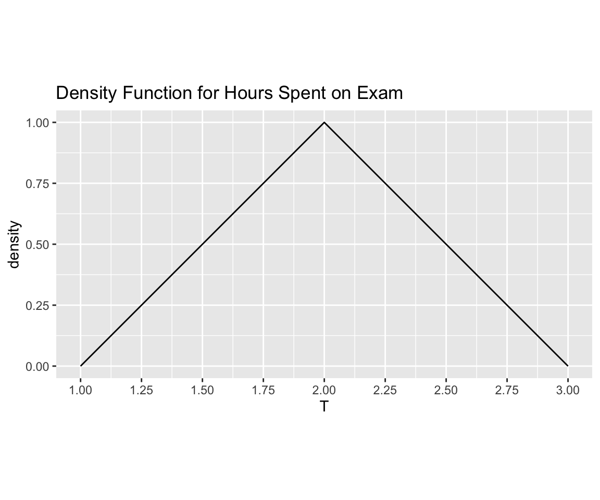

HW 8: Random Variables
Math 141, Week 10
Assigned: Friday, April 3rd
Due: Friday, April 10th at 11:59pm on Gradescope
In this homework assignment you will practice:
- Computing expectation, variance, and standard deviation for discrete and continuous random variables
- Calculating probabilities and quantiles using random variable distributions
- Working with standardized Normal distributions
Add any collaborators here!
I collaborated with…
Remember that you are not allowed to use any generative AI models (like ChatGPT) on your assignment
Exercises
Exercise 1: Discrete Random Variables
Supposed \(X\) is a discrete random variable with the following distribution table:
| \(X\) | \(P(X=x)\) |
|---|---|
| -3 | 0.2 |
| 3 | 0.5 |
| 10 | 0.3 |
a. What is \(E(X)\)?
b. What are \(Var(X)\) and \(SD(X)\)?
c. Suppose \(Y = X^2\). What is the distribution table for \(Y\)?
| \(Y\) | \(P(Y=y)\) |
|---|---|
d. What is \(E(Y) = E(X^2)\)?
e. Using your answers for parts (a) and (d), calculate \(E(X^2) - [E(X)]^2\). Compare your answer to what you got for \(Var(X)\) in part (b).
Exercise 2: Binomial Distribution
A Gallup Poll found that 7% of teenagers (ages 13 to 17) suffer from arachnophobia and are extremely afraid of spiders. At a summer camp there are 10 teenagers sleeping in each tent. Assume that these 10 teenagers are independent of each other.
a. Let \(X\) be the number of teenagers in a tent of 10 teenagers who suffer from arachnophobia. Precisely explain why \(X\) follows a Binomial(n,p) distribution, and state what values \(n\) and \(p\) are.
b. Calculate E(X), the expected number of teenagers in a tent who suffer from arachnophobia.
c. Calculate the probability that at least one teenager suffers from arachnophobia. (Hint: remember that the R functions pbinom(), dbinom(), and qbinom() can help you calculate quantities related to Binomial distributions.)
d. Calculate the probability that exactly 2 of them suffer from arachnophobia. (Hint: remember that the R functions pbinom(), dbinom(), and qbinom() can help you calculate quantities related to Binomial distributions.)
e. Calculate the probability that at most 1 of them suffers from arachnophobia. (Hint: remember that the R functions pbinom(), dbinom(), and qbinom() can help you calculate quantities related to Binomial distributions.)
f. If the camp counselor wants to make sure no more than 1 teenager in each tent is afraid of spiders, does it seem reasonable for him to randomly assign teenagers to tents?
Exercise 3: Continuous Random Variables
Suppose the number of hours a particular student takes to complete a statistics exam is modeled by a continuous random variable \(T\) with the following density function:
Models of this type arise frequently in settings where we have sparse information to model a continuous phenomenon (i.e. we may only have estimates for the minimum, maximum, and most likely values for the phenomenon).
As a reminder, the probability that \(T\) falls within some range will be the area under the density function for that range (e.g., \(P(1.5 \leq T \leq 2)\) will be the area under the density function from 1.5 to 2). For each of the following parts of the problem, use geometric reasoning to compute areas (you do not need to use calculus to answer any of these problems). Recall that the area of a triangle is \(A = 0.5*base*height\).
a. Verify that the function plotted above indeed has area of 1. Your explanation should be mathematical in nature, but please explain your thought process in words.
b. What is the probability that the student takes at most 2.5 hours to complete the exam? Explain your reasoning.
c. What is the value of \(t\) so that a student has probability \(\frac{1}{8}\) of completing the exam before time \(t\)? Explain your reasoning.
d. During what interval of length \(1\) does the student have the largest probability of completing the exam. That is, find a number \(a\) so that \(P(a < T < a+1)\) is as large as possible. Explain your reasoning.
Exercise 4: Normal Distribution Warm Up
The average daily high temperature in June in Los Angeles (LA) is 77 degrees Fahrenheit, with a standard deviation of 5 degrees. Suppose that the temperatures in June closely follow a normal distribution, i.e., \(F\sim \text{Normal}(\mu=77, \sigma=5)\).
a. What is the probability of observing an 83 degree or higher day in LA during a randomly chosen day in June? (Hint: remember that the R functions pnorm(), dnorm(), and qnorm() can help you calculate quantities related to Normal distributions.)
b. How cool are the coldest 10% of the days (days with lowest high temperature) during June in LA? (Hint: remember that the R functions pnorm(), dnorm(), and qnorm() can help you calculate quantities related to Normal distributions.)
Exercise 5: Normal Distribution and Z-scores
In triathlons, it is common for racers to be placed into age and gender groups. Friends David and Mary both completed the Hermosa Beach Triathlon, where David competed in the Men, Ages 30 - 34 group while Mary competed in the Women, Ages 25 - 29 group. David completed the race in 1:22:28 (4948 seconds), while Mary completed the race in 1:31:53 (5513 seconds). Obviously David finished faster, but they are curious about how they did within their respective groups. Here is some information on the performance of their groups:
- The finishing times of the Men, Ages 30 - 34 group has a mean of 4313 seconds with a standard deviation of 583 seconds.
- The finishing times of the Women, Ages 25 - 29 group has a mean of 5261 seconds with a standard deviation of 807 seconds.
- The distributions of finishing times for both groups are approximately Normal.
Remember: a better performance corresponds to a faster finish.
a. Write down the short-hand notation for these two normal distributions.
b. Recall that we standardize Normal distributions by subtracting the mean \(\mu\) from the random variable and dividing by the standard deviation \(\sigma\). For any observation \(x\) of a random variable, we call the quantity \(Z = \frac{x - \mu}{\sigma}\) the “Z-score”. What are the Z-scores for David’s and Mary’s finishing times? What do these Z-scores tell you?
c. Did David or Mary rank better in their respective groups? Explain your reasoning.
d. What percent of the triathletes did David finish faster than in his group? (Hint: remember that the R functions pnorm(), dnorm(), and qnorm() can help you calculate quantities related to Normal distributions.)
e. What percent of the triathletes did Mary finish faster than in her group? (Hint: remember that the R functions pnorm(), dnorm(), and qnorm() can help you calculate quantities related to Normal distributions.)
f. If the distributions of finishing times are not nearly normal, would your answers to any of the parts (b) - (e) change? Explain your reasoning.